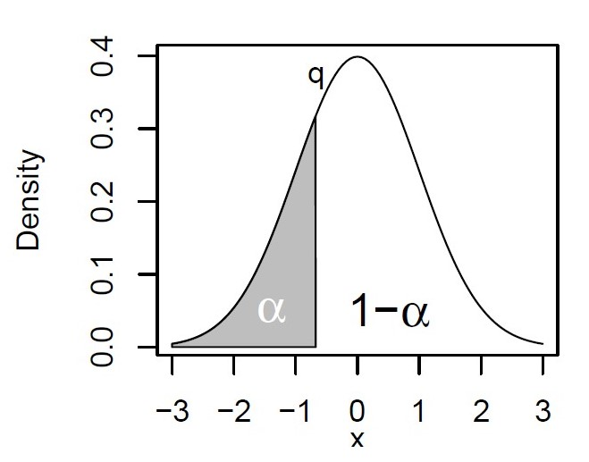

Estadística descriptiva en R
Andres Felipe Beltran
27/04/2021
Distribuciones
- La cantidad de datos suele ser pequeña (cantidad de muestra, costo).
- La naturaleza de la distribución suele desconocerse.
- Cuando hacemos un experimento, determinamos una propiedad x de un sistema. Los valores que toma esta propiedad tienen una distribución empírica.
Siempre que sea posible, debemos inspeccionar visualmente esta distribucion para tener una mejor idea de la estructura de los datos.
Medidas descriptivas de una distribucion:
- minimo
- promedio
- mediana
- maximo
- cuantiles
Cuantiles
Un cuantil q se define para una fraccion \(\alpha\) (entre 0 y 1). Es el valor cuando una fraccion \(\alpha\) de los datos es menor a este valor, y una fraccion \(1 - \alpha\) es mayor a este valor.

Cuantiles
Para los percentiles, \(\alpha\) se expresa en porcentaje (%).
Cuartiles
Los cuartiles dividen la distribucion en cuatro partes:
- Primer cuartil (\(Q_1\)) : 25%
- segundo cuartil (\(Q_2\)) : 50% = mediana
- Tercer cuartil (\(Q_3\)) : 75%
Es posible calcular los cuartiles para un set de datos:
## [1] 47 52 52 57 58 58 60 65 66 66 71 71 72 73 96Ejercicio 1
La funcion quantile() de R nos da informacion sobre estas medidas descriptivas
## 0% 25% 50% 75% 100%
## 47 57 65 71 96Existen varios métodos para calcular los cuartiles.
Curtosis y oblicuidad en R
son medidas de la desviacion de la normalidad para una distribucion:
- curtosis para \(N(\mu,\sigma)\): 3
- oblicuidad para \(N(\mu,\sigma)\) : 0

Curtosis y oblicuidad en R
## [1] 4.428705## [1] 1.044099Existen varias definiciones para cada estimador.
Para nuestra distribucion: curtosis de 4.43 y oblicuidad de 1.04
Quitando el valor atipico:
Si calculamos los estimadores sin el valor atipico:
## [1] 1.861944## [1] -0.2306228Ademas, existe una serie de graficos para evaluar visualmente la distribución empírica de un experimento.

library(chemometrics) #Donde estan los datos
data(glass) #Cargamos los datos del vidrio
CaO <- glass[, 'CaO']# Seleccionamos los resultados de CaO
CaO # 180 mediciones## [1] 8.784 8.636 11.088 10.833 8.808 6.160 12.982 6.324 9.445 6.356
## [11] 8.306 8.454 8.474 9.606 6.426 8.600 9.724 8.952 4.224 5.512
## [21] 3.682 5.266 5.132 3.584 4.350 5.130 5.566 4.793 4.408 6.240
## [31] 5.406 5.108 4.994 9.568 10.652 10.654 9.692 8.270 9.326 8.480
## [41] 8.998 8.954 11.396 10.668 10.562 11.092 9.968 10.482 10.626 10.444
## [51] 10.306 8.474 9.946 10.308 10.334 11.330 18.698 23.636 21.868 23.172
## [61] 19.814 22.340 23.106 15.544 15.418 14.336 14.312 14.422 14.728 14.890
## [71] 14.122 14.890 14.495 21.614 23.258 22.392 5.560 4.700 5.676 4.686
## [81] 7.820 9.148 6.220 9.323 9.408 10.182 10.870 9.155 9.233 9.393
## [91] 5.474 7.992 10.810 8.776 10.270 10.182 10.550 9.908 8.388 8.868
## [101] 9.420 10.166 5.920 10.630 10.794 10.700 12.684 9.090 6.436 9.190
## [111] 8.512 9.318 8.110 8.042 8.136 5.322 5.250 5.264 5.610 9.098
## [121] 7.922 9.304 9.020 9.696 4.742 4.934 4.850 3.570 5.324 4.780
## [131] 4.788 3.942 3.740 3.902 4.956 4.908 4.330 4.816 4.650 4.264
## [141] 3.948 4.368 4.605 4.584 4.358 6.070 4.788 4.219 5.600 4.330
## [151] 5.176 4.830 4.996 4.846 4.560 4.766 3.962 4.362 4.436 3.618
## [161] 4.412 6.358 3.944 4.604 6.100 6.398 6.532 5.190 4.150 3.954
## [171] 4.316 4.768 4.740 4.188 6.090 5.536 5.448 3.596 5.974 10.764Diagrama de cajas y bigotes (boxplot)
boxplot por grupos
Ejercicio 2
library(downloader)
url="https://raw.githubusercontent.com/genomicsclass/dagdata/master/inst/extdata/msleep_ggplot2.csv"
filename <- basename(url)
download(url,filename)- Calcular los cuartiles para la variable
sleep_totaldel data.frame - Evaluar visualmente la distribucion mediante las funciones
stripchart(),hist(),plot(density())yboxplot()